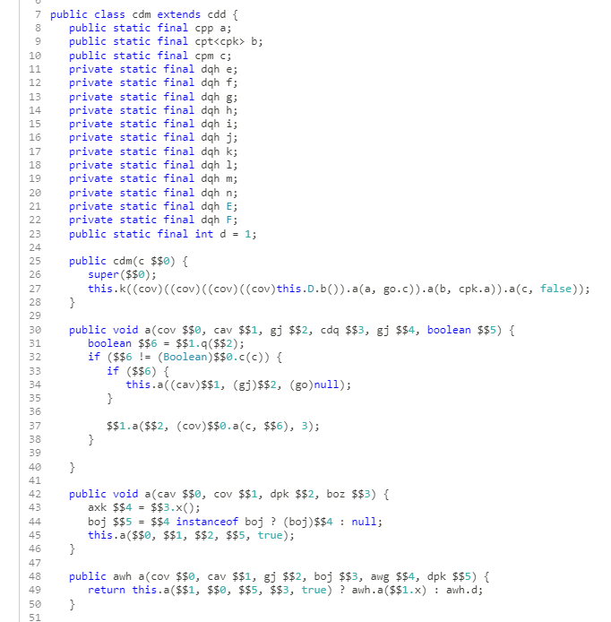

Sometimes, for one reason or another, you might want to take a look at Minecraft's source code to get a better understanding of the game's inner workings. Here's a guide on decompiling Minecraft.
Getting the Files §
To start, you need to obtain the game JAR as well as the deobfuscation mappings. I've compiled links to all of these resources here.
We need the deobfuscation mappings because Minecraft's source code is obfuscated, meaning that the names of classes and methods are set to random, meaningless strings to prevent reverse engineering. This is what the decompiled source looks like without deobfuscation:

Renaming §
The first thing we're gonna do is rename all the names in the game JAR using the obfuscation mappings. This can be accomplished using a tool called SpecialSource, which can be obtained through Maven. Here's the usage for remapping a JAR:
java -jar SpecialSource-1.11.0-shaded.jar -i <original JAR> -o <output filename> -m <mappings filename> --kill-lvtThe --kill-lvt flag tells SpecialSource to ignore local variables. We include it since Mojang's official mappings do not include local variable names.
Decompiling §
Once the JAR is remapped, it's ready to be decompiled. You have quite a few choices of decompilers, but there are really two that are worth using:
Thankfully, in our case, the choice of decompiler is not that important since we don't need to recompile the game. I'll be using Quiltflower in today's decompilation. Quiltflower is a fork of Fernflower created for the QuiltMC project, with patches to produce more concise output in certain situations. Quiltflower is a drop-in replacement for Fernflower, so the following steps should work just as well if you're using Fernflower.
The first step is to obtain Quiltflower, which can be downloaded from its GitHub page. Next, we can begin the decompilation:
java -jar quiltflower-1.8.1.jar <remapped JAR> src/Once the decompiler is done, you're set!
Epilogue §
If all of this seems like too much work to you, you're in luck: there's a project called DecompilerMC which will fetch all the tools and files necessary to decompile any version of Minecraft with released mappings automatically.
For versions 1.12 and below, ModCoderPack can be used to deobfuscate Minecraft with community-submitted mappings. Similarly, MCPConfig has mappings for 1.12 up to 1.19.